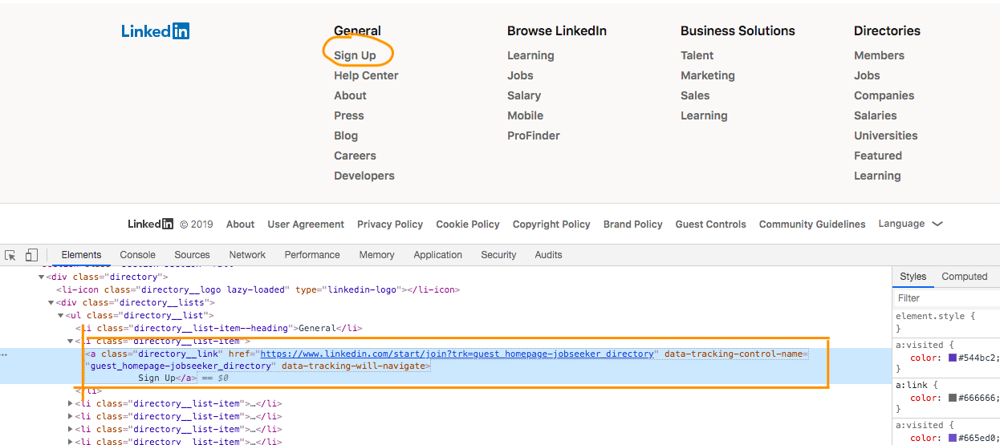

1.How to Print 'href' value of a Link??
We are taking example of Linkedin Sign up link href value print. See below image..

String hrefvale = driver.findElement(By.xpath("//a[contains(.,'Sign Up')]")).getAttribute("href"); System.out.println("The href value of sign up link is ==>"+ hrefvale);
2.Count All Links Present In a Web Page
1. In Google Chrome navigate to any URL. Here we are giving example of
https://www.javatpoint.com and printing all links present in the Home page.
package Ershad; import java.util.ArrayList; import java.util.concurrent.TimeUnit; import org.openqa.selenium.By; import org.openqa.selenium.WebDriver; import org.openqa.selenium.chrome.ChromeDriver; public class TestAndDelete { public static WebDriver driver=null; public static void main(String args[]) throws Exception { System.setProperty("webdriver.chrome.driver","/Users/20020t/Downloads/chromedriver"); driver=new ChromeDriver(); driver.manage().window().maximize(); driver.get("https://www.javatpoint.com/"); driver.manage().timeouts().implicitlyWait(10, TimeUnit.SECONDS); // Count number of links.... int numberofLinks = driver.findElements(By.xpath("//a")).size(); for(int x = 1;x<=numberofLinks;x++) { System.out.println(driver.findElement(By.xpath("(//a)["+x+"]")).getText()); } driver.quit(); } }
3.Count All 'Images' Present In a Web Page
1. In Google Chrome navigate to any URL. Here we are giving example of
https://www.javatpoint.com and printing all images present in the Home page.
package Ershad; import java.util.ArrayList; import java.util.concurrent.TimeUnit; import org.openqa.selenium.By; import org.openqa.selenium.WebDriver; import org.openqa.selenium.chrome.ChromeDriver; public class TestAndDelete { public static WebDriver driver=null; public static void main(String args[]) throws Exception { System.setProperty("webdriver.chrome.driver","/Users/20020t/Downloads/chromedriver"); driver=new ChromeDriver(); driver.manage().window().maximize(); driver.get("https://www.javatpoint.com/"); driver.manage().timeouts().implicitlyWait(10, TimeUnit.SECONDS); // Count number of links.... int numberofLinks = driver.findElements(By.xpath("//img")).size(); for(int x = 1;x<=numberofLinks;x++) { System.out.println(driver.findElement(By.xpath("(//img)["+x+"]")).getText()); } driver.quit(); } }
4.How to scroll to an element using Selenium??
WebElement element = driver.findElement(By.xpath("any Xpath")); ((JavascriptExecutor)driver).executeScript("arguments[0].scrollIntoView();", element); // Wait for sometime…...Explicit Wait is fine...
5.How to print ALL DROP DOWN OPTIONS??
package Ershad;
import org.openqa.selenium.*;
import org.openqa.selenium.chrome.*;
import org.openqa.selenium.support.ui.Select;
import java.util.List;
public class DEMO {
public static WebDriver driver = null;
// Example ....
// select id="country" class="custom-select" name="vehicleTypeName"
// option value="">-Select Style-/option>
// option value="IND">INDIA/option>
// option value="CHN">CHINA/option>
// option value="BGD">BANGADESH/option>
// /select
public static void main(String args[]) throws Exception {
System.setProperty("webdriver.chrome.driver", "/Users/mr/Downloads/chromedriver2");
driver = new ChromeDriver();
driver.get("https://google.com/");
driver.manage().window().maximize();
Select dropDown = new Select(driver.findElement(By.xpath("Drop down element xpath")));
List<WebElement> e = dropDown.getOptions();
int itemCount = e.size();
for(int l = 0; l < itemCount; l++)
{
System.out.println(e.get(l).getText());
}
}
}
6.How to print default drop down value??
Select select = new Select(driver.findElement(By.xpath("Country"))); WebElement option = select.getFirstSelectedOption(); String defaultItem = option.getText();
7.How to validate font size of an element by Selenium??
// This method will compare css font size
public static boolean validateFontSize(String xpath , String expectedFont)
{
boolean font = false;
try{
if(driver.findElement(By.xpath(xpath)).isDisplayed())
{
String actualFont = driver.findElement(By.xpath(xpath)).getCssValue("font-size");
if(actualFont.equals(expectedFont)){font=true;};
}
}
catch(Exception e) { }
return font;
}
// This method will compare css font size public static boolean validateFontSize(String xpath , String expectedFont) { boolean font = false; try{ if(driver.findElement(By.xpath(xpath)).isDisplayed()) { String actualFont = driver.findElement(By.xpath(xpath)).getCssValue("font-size"); if(actualFont.equals(expectedFont)){font=true;}; } } catch(Exception e) { } return font; }
8.How to validate font 'color' an element by Selenium??
// This method will compare Web Element Color
public static boolean validateElementColor(String xpath , String expetedColor)
{
boolean ecolor = false;
try{
if(driver.findElement(By.xpath(xpath)).isDisplayed())
{
String color = driver.findElement(By.xpath(xpath)).getCssValue("color");
String[] hexValue = color.replace("rgba(", "").replace(")", "").split(",");
int hexValue1=Integer.parseInt(hexValue[0]);
hexValue[1] = hexValue[1].trim();
int hexValue2=Integer.parseInt(hexValue[1]);
hexValue[2] = hexValue[2].trim();
int hexValue3=Integer.parseInt(hexValue[2]);
String actualColor = String.format("#%02x%02x%02x", hexValue1, hexValue2, hexValue3);
if(actualColor.equals(expetedColor)){ecolor=true;};
}
}
catch(Exception e) { }
return ecolor;
}
// This method will compare Web Element Color public static boolean validateElementColor(String xpath , String expetedColor) { boolean ecolor = false; try{ if(driver.findElement(By.xpath(xpath)).isDisplayed()) { String color = driver.findElement(By.xpath(xpath)).getCssValue("color"); String[] hexValue = color.replace("rgba(", "").replace(")", "").split(","); int hexValue1=Integer.parseInt(hexValue[0]); hexValue[1] = hexValue[1].trim(); int hexValue2=Integer.parseInt(hexValue[1]); hexValue[2] = hexValue[2].trim(); int hexValue3=Integer.parseInt(hexValue[2]); String actualColor = String.format("#%02x%02x%02x", hexValue1, hexValue2, hexValue3); if(actualColor.equals(expetedColor)){ecolor=true;}; } } catch(Exception e) { } return ecolor; }
9.How to validate 'background-color' of an element by Selenium??
// This method will compare Web Element Background Color
public static boolean validateElementBGColor(String xpath , String expetedColor)
{
boolean ecolor = false;
try{
if(driver.findElement(By.xpath(xpath)).isDisplayed())
{
String bcolor = driver.findElement(By.xpath(xpath)).getCssValue("background-color");
String[] hexValue = bcolor.replace("rgba(", "").replace(")", "").split(",");
int hexValue1=Integer.parseInt(hexValue[0]);
hexValue[1] = hexValue[1].trim();
int hexValue2=Integer.parseInt(hexValue[1]);
hexValue[2] = hexValue[2].trim();
int hexValue3=Integer.parseInt(hexValue[2]);
String bactualColor = String.format("#%02x%02x%02x", hexValue1, hexValue2, hexValue3);
if(bactualColor.equals(expetedColor)){ecolor=true;};
}
}
catch(Exception e) {}
return ecolor;
}
// This method will compare Web Element Background Color public static boolean validateElementBGColor(String xpath , String expetedColor) { boolean ecolor = false; try{ if(driver.findElement(By.xpath(xpath)).isDisplayed()) { String bcolor = driver.findElement(By.xpath(xpath)).getCssValue("background-color"); String[] hexValue = bcolor.replace("rgba(", "").replace(")", "").split(","); int hexValue1=Integer.parseInt(hexValue[0]); hexValue[1] = hexValue[1].trim(); int hexValue2=Integer.parseInt(hexValue[1]); hexValue[2] = hexValue[2].trim(); int hexValue3=Integer.parseInt(hexValue[2]); String bactualColor = String.format("#%02x%02x%02x", hexValue1, hexValue2, hexValue3); if(bactualColor.equals(expetedColor)){ecolor=true;}; } } catch(Exception e) {} return ecolor; }
10.How to Handle TAB using selenium??
package Ershad;
import org.openqa.selenium.*;
import org.openqa.selenium.chrome.*;
import java .util.ArrayList;
public class DEMO {
public static WebDriver driver = null;
public static void main(String args[]) throws Exception {
System.setProperty("webdriver.chrome.driver", "/Users/rm/Downloads/chromedriver2");
driver = new ChromeDriver();
driver.get("https://google.com/");
driver.manage().window().maximize();
((JavascriptExecutor) driver).executeScript("window.open()"); // Creating a new TAB
ArrayList<String> tabs = new ArrayList<String>(driver.getWindowHandles());
driver.switchTo().window(tabs.get(1)); // Switching to child window by Index
driver.navigate().to("https://www.facebook.com"); // Closing child window
driver.switchTo().window(tabs.get(0)); // Switching back to parent window by index
driver.quit();
}
}
package Ershad; import org.openqa.selenium.*; import org.openqa.selenium.chrome.*; import java .util.ArrayList; public class DEMO { public static WebDriver driver = null; public static void main(String args[]) throws Exception { System.setProperty("webdriver.chrome.driver", "/Users/rm/Downloads/chromedriver2"); driver = new ChromeDriver(); driver.get("https://google.com/"); driver.manage().window().maximize(); ((JavascriptExecutor) driver).executeScript("window.open()"); // Creating a new TAB ArrayList<String> tabs = new ArrayList<String>(driver.getWindowHandles()); driver.switchTo().window(tabs.get(1)); // Switching to child window by Index driver.navigate().to("https://www.facebook.com"); // Closing child window driver.switchTo().window(tabs.get(0)); // Switching back to parent window by index driver.quit(); } }
11.How to Handle Child+Parent Window Using Selenium
package Ershad; import org.openqa.selenium.*; import org.openqa.selenium.chrome.*; import java.util.ArrayList; import java.util.Set; import java.util.Iterator; public class DEMO { public static WebDriver driver = null; public static void main(String args[]) throws Exception { System.setProperty("webdriver.chrome.driver", "/Users/rm/Downloads/chromedriver2"); driver = new ChromeDriver(); driver.get("https://google.com/"); driver.manage().window().maximize(); // Returns the parent window name as a String String mainWindow = driver.getWindowHandle(); // Returns number of windows opened by WebDriver and will return Set of Strings Set<String> set = driver.getWindowHandles(); // Using Iterator to iterate with in windows Iterator<String> itr = set.iterator(); while (itr.hasNext()) { String childWindow = itr.next(); // Compare whether the main windows is not equal to child window. If not equal, we will close. if (!mainWindow.equals(childWindow)) { driver.switchTo().window(childWindow); // Below code will print Child Window URL System.out.println(driver.switchTo().window(childWindow).getCurrentUrl()); driver.close(); } } // Back to Parent Window driver.switchTo().window(mainWindow); driver.quit(); } }
12.Navigate to a specific URL in same TAB
System.setProperty("webdriver.chrome.driver", "/Users/rm/Downloads/chromedriver2"); driver = new ChromeDriver(); driver.get("https://google.com/"); driver.manage().window().maximize(); // now navigating from google to facebook driver.navigate().to("https://www.faacebook.com"); driver.quit();
13.Difference between driver.close() and driver.quit()
System.setProperty("webdriver.chrome.driver", "/Users/rm/Downloads/chromedriver2"); driver = new ChromeDriver(); driver.get("https://google.com/"); driver.manage().window().maximize(); // Returns the parent window name as a String String mainWindow = driver.getWindowHandle(); // Returns number of windows opened by WebDriver and will return Set of Strings Set<String> set = driver.getWindowHandles(); // Using Iterator to iterate with in windows Iterator<String> itr = set.iterator(); while (itr.hasNext()) { String childWindow = itr.next(); // Compare whether the main windows is not equal to child window. If not equal, we will close. if (!mainWindow.equals(childWindow)) { driver.switchTo().window(childWindow); // Below code will print Child Window URL System.out.println(driver.switchTo().window(childWindow).getCurrentUrl()); driver.close(); // Closing child TAB } } // Back to Parent Window driver.switchTo().window(mainWindow); driver.quit(); // Closing Window including all TABs
14.Right click using Selenium?
System.setProperty("webdriver.chrome.driver", "/Users/mr/Downloads/chromedriver2");
driver = new ChromeDriver();
driver.get("https://google.com/");
driver.manage().window().maximize();
WebElement element = driver.findElement(By.id("hplogo"));
Actions action = new Actions(driver).contextClick(element);
action.build().perform();
try{Thread.sleep(5000);}catch(Exception e){};
driver.quit(); // Closing Window
15.Double click using Selenium?
System.setProperty("webdriver.chrome.driver", "/Users/MR/Downloads/chromedriver2");
driver = new ChromeDriver();
driver.get("https://google.com/");
driver.manage().window().maximize();
WebElement element = driver.findElement(By.id("hplogo"));
Actions action = new Actions(driver);
//Here I used JavascriptExecutor interface to scroll down to the targeted element
((JavascriptExecutor) driver).executeScript("arguments[0].scrollIntoView();", element);
//used doubleClick(element) method to do double click action
action.doubleClick(element).build().perform();
try{Thread.sleep(5000);}catch(Exception e){};
driver.quit(); // Closing Window
16.Drag and Drop using Selenium?
System.setProperty("webdriver.chrome.driver", "/Users/mr/Downloads/chromedriver2"); driver = new ChromeDriver(); driver.get("https://google.com/"); driver.manage().window().maximize(); Actions action = new Actions(driver); //navigate to the required url where we could do drag and drop action driver.get("http://jqueryui.com/droppable/"); //To get source Element WebElement fromobject = driver.findElement(By.id("WebElement")); //To get target Element WebElement toobject = driver.findElement(By.cssSelector("#droppable")); //dragAndDrop(source, target) method accepts two parameters source and Element. //used dragAndDrop method to drag and drop the source locator to target Element action.dragAndDrop(fromobject, toobject).build().perform(); try{Thread.sleep(5000);}catch(Exception e){}; driver.quit(); // Closing Window
17.Capture Screenshot using Selenium?
System.setProperty("webdriver.chrome.driver", "/Users/mr/Downloads/chromedriver2"); driver = new ChromeDriver(); driver.get("https://google.com/"); driver.manage().window().maximize(); File screenshotFile = ((TakesScreenshot)driver).getScreenshotAs(OutputType.FILE); FileUtils.copyFile(screenshotFile, new File("C:\\manual2Automation.png")); try{Thread.sleep(5000);}catch(Exception e){}; driver.quit(); // Closing Window
18.How To Read XL file using Selenium
Dependency Required:
<dependencies> <!-- https://mvnrepository.com/artifact/org.apache.poi/poi --> <dependency> <groupId>org.apache.poi</groupId> <artifactId>poi</artifactId> <version>3.11</version> </dependency> <dependency> <groupId>org.apache.poi</groupId> <artifactId>poi-ooxml</artifactId> <version>3.11</version> </dependency> </dependencies>
Code To Read XL Data
package Ershad; import java.io.File; import java.io.FileInputStream; import java.util.ArrayList; import java.util.Iterator; import org.apache.poi.ss.usermodel.Cell; import org.apache.poi.ss.usermodel.Row; import org.apache.poi.xssf.usermodel.XSSFSheet; import org.apache.poi.xssf.usermodel.XSSFWorkbook; public class Test2 { public static void main(String[] args) { // TODO Auto-generated method stub try { FileInputStream file = new FileInputStream(new File("C:\\Users\\200908\\OneDrive - Cognizant\\Desktop\\Practise.xlsx")); // Create Workbook instance holding reference to .xlsx file XSSFWorkbook workbook = new XSSFWorkbook(file); // Get first/desired sheet from the workbook XSSFSheet sheet = workbook.getSheetAt(0); // Iterate through each rows one by one Iterator<Row> rowIterator = sheet.iterator(); while (rowIterator.hasNext()) { Row row = rowIterator.next(); // For each row, iterate through all the columns Iterator<Cell> cellIterator = row.cellIterator(); while (cellIterator.hasNext()) { Cell cell = cellIterator.next(); // Check the cell type and format accordingly switch (cell.getCellType()) { case Cell.CELL_TYPE_NUMERIC: System.out.print(cell.getNumericCellValue()+"|"); break; case Cell.CELL_TYPE_STRING: System.out.print(cell.getStringCellValue()+"|"); break; } } System.out.println(""); } file.close(); } catch(Exception e) { } } }
19.Read XML Using Java For Selenium
Sample XML : For Keeping Test Data
<TestCase> <FirstName>MITHUN</FirstName> <LastName>ROY</LastName> <EmailID>mithunroy.ee@gmail.com</EmailID> <PhoneNumber>123456789</PhoneNumber> </TestCase>
Code to read XML:
package Ershad; import java.io.File; import java.io.FileInputStream; import java.util.ArrayList; import java.util.Iterator; import javax.xml.parsers.DocumentBuilder; import javax.xml.parsers.DocumentBuilderFactory; public class ReadXL { public static void main(String[] args) { // TODO Auto-generated method stub String firstname = getXMLData("FirstName"); System.out.println(firstname); } public static String getXMLData(String datafor) { String nodevalue = null; try{ String sourceXML = "/Users/mr/IdeaProjects/DeleteThisProject/readXML.xml"; File file = new File(sourceXML); DocumentBuilderFactory documentBuilderFactory = DocumentBuilderFactory.newInstance(); DocumentBuilder documentBuilder = documentBuilderFactory.newDocumentBuilder(); org.w3c.dom.Document document = documentBuilder.parse(file); nodevalue = document.getElementsByTagName(datafor).item(0).getTextContent(); } catch(Exception e) { nodevalue = null; } return nodevalue; } }
20.How to do Mouse Hover using Selenium?
System.setProperty("webdriver.chrome.driver", "/Users/mr/Downloads/chromedriver2"); driver = new ChromeDriver(); driver.get("https://google.com/"); driver.manage().window().maximize(); Actions builder = new Actions(driver); WebElement element = driver.findElement(By.id("hplogo")); builder.moveToElement(element).build().perform(); try{Thread.sleep(5000);}catch(Exception e){}; driver.quit(); // Closing Window
21.What are different Locators in Selenium?
//Different types of Locators in Selenium are as follows: // i. ID WebElement eleId = driver.findElement(By.id("Login")); // ii. Name WebElement eleName = driver.findElement(By.name("signUP")); // iii. Class Name WebElement eleClass = driver.findElement(By.className("eleClass")); // iv. Tag Name WebElement eleTag = driver.findElement(By.tagName("img")); // v. Link Text & Partial Link Text WebElement parLink = driver.findElement(By.partialLinkText("LinkText")); // vi. CSS Selector WebElement eleCss = driver.findElement(By.cssSelector("Div.a")); // vii. XPath WebElement eleXpath = driver.findElement(By.xpath("//a[@input = 'buttton']"));
22.Implicit , Explicit , Fluent Wait in Selenium
Implicit Wait :
driver.manage().timeouts().implicitlyWait(30, TimeUnit.SECONDS);
Explicit Wait :
WebDriverWait wait = new WebDriverWait(WebDriverRefrence,20); WebElement aboutMe; aboutMe= wait.until(ExpectedConditions.visibilityOfElementLocated(By.id("SignIn")));
Fluent Wait :
Wait<WebDriver> wait = new FluentWait<WebDriver>(driver)
.withTimeout(20, TimeUnit.SECONDS)
.pollingEvery(5, TimeUnit.SECONDS)
.ignoring(NoSuchElementException.class);
WebElement aboutMe= wait.until(new Function<WebDriver, WebElement>() {
public ********** apply(WebDriver driver) {
****** driver.findElement(By.id("LoginButton"));
}
});
23.Headless in Chrome Browser ~
ChromeOptions options = new ChromeOptions();
System.setProperty("webdriver.chrome.driver", "/Users/mr/Downloads/chromedriver2");
options.addArguments("--headless");
driver = new ChromeDriver(options);
driver.get("https://google.com/");
24.Types of Webdriver APIs are available in Selenium?
Below is the list of driver classes that you can use for the browser automation.
- ChromeDriver,
- FirefoxDriver,
- HtmlUnitDriver,
- InternetExplorerDriver,
- IPhoneDriver,
- EventFiringWebDriver,
- IPhoneSimulatorDriver,
- AndroidDriver,
- RemoteWebDriver.
25.How to make sure that a page is loaded using Selenium Webdriver?
WebDriverWait check = new WebDriverWait(driver, 40);
check.until(ExpectedConditions.anyElement(By.id("Login")));
26.Read a JavaScript variable in Selenium WebDriver?
// Initialize the Javascripts object.
JavascriptExecutor JS = (JavascriptExecutor) driver;
// Get the current site title.
String TL = (String)JS.executeScript("Document Title");
System.out.println("Title IS : " + TL);
27.Run the Selenium Webdriver test from the command line?
java -classpath ".;selenium-server-standalone-3.2.0.0.jar" packagename\classname
28.Exceptions we face in Selenium Webdriver?
NoSuchWindowException,
NoSuchElementException,
WebDriverException,
NoAlertPresentException,
TimeoutException.
29.How can you check the state of a checkbox/radio button?
boolean ele_status = driver.findElement(By.id("checkbox/radio button id")).isSelected();30.Handle the alert popups in Selenium Webdriver?
String parentWindow = driver.getWindowHandle();
Alert pop = driver.switchTo().alert(); // shift control to the alert popup.
pop.accept(); // click on ok/yes button.
pop.dismiss(); // click on cancel button.
// Move the control back to source page.
driver.switchTo().window(parentWindow); // move back to the source page.
31.Process to start the IE/Chrome browser?
// For the IE web browser.
System.setProperty("webdriver.ie.driver","/Users/mr/Downloads/iedriver.exe");
WebDriver driver = new InternetExplorerDriver();
// For the Chrome web browser.
System.setProperty("webdriver.chrome.driver","/Users/mr/Downloads/chromedriver.exe");
WebDriver driver = new ChromeDriver();
32.Differentiate between the absolute and relative XPath?
Single slash "/" signifies an absolute XPath.Means immediate child
Double Slash "//" represents the relative XPath.May not be iimediate child
<div>
<li>
<li>
<a>
<ul>
<li>
<a>
<li>
<a>
<li>
As per above example -> div/li count should be 2 , but div//li count is 5
Applying same logic --> div/a == 1 but div//a == 3
33. Handle Frame using Selenium
// By Frame ID
driver.switchTo().frame("FrameID");
// By Frame Name
driver.switchTo().frame("FrameName");
// By Frame Web Element
driver.switchTo().frame(driver.findElement(By.id("frameId")));
// By Frame Index
driver.switchTo().frame(0);
driver.switchTo().frame(1);
// Go Back To Parent Window From Frame
driver.switchTo().defaultContent();
34. Upload an Image using Selenium
WebElement ele = driver.findElement(By.id("BrowseButton"));
ele.sendKeys("D:\\Images\\img1.png");
35. Type without using SendKeys in Selenium
((JavascriptExecutor)driver).executeScript("document.getElementById('emailTextBox').value='abc@gmail.com';");